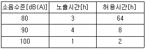
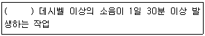
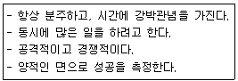
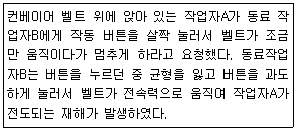
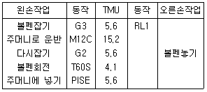
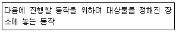

인간공학기사 (2019-08-04 기출문제)
1과목: 인간공학개론
1. 음량의 측정과 관련된 사항으로 적절하지 않은 것은?
- 물리적 소리강도는 지각되는 음의 강도와 비례한다.
- 소리의 세기에 대한 물리적 측정 단위는 데시벨(dB)이다.
- 손(sone)과 폰(phon)은 지각된 음의 강약을 측정하는 단위다.
- 손(sone)의 값 1은 주파수가 1000Hz이고, 강도가 40dB인 음이 지각되는 소리의 크기이다.
(정답률: 57%)

2. 부품배치의 원칙이 아닌 것은?
- 중요성의 원칙
- 사용 빈도의 원칙
- 사용 순서의 원칙
- 크기별 배치의 원칙
(정답률: 87%)
3. 산업현장에서 필요한 인체치수와 같이 움직이는 자세에서 측정한 인체치수는?
- 기능적 인체치수
- 정적 인체치수
- 구조적 인체치수
- 고정 인체치수
(정답률: 88%)
4. 청각적 표시장치에 적용되는 지침으로 적절하지 않은 것은?
- 신호음은 배경소음과 다른 주파수를 사용한다.
- 신호음은 최소한 0.5~1초 동안 지속시킨다.
- 300m이상 멀리 보내는 신호음은 1000Hz 이하의 주파수가 좋다.
- 주변 소음은 주로 고주파이므로 은폐효과를 막기 위해 200Hz이하의 신호음을 사용하는 것이 좋다.
(정답률: 69%)
5. 인간과 기계의 역할분담에 이어 인간은 시스템 설치와 보수, 유지 및 감시 등의 역할만 담당하게 되는 시스템은?
- 수동시스템
- 기계시스템
- 자동시스템
- 반자동시스템
(정답률: 70%)
6. 연구조사에서 사용되는 기준척도의 요건에 대한 설명으로 옳은 것은?
- 타당성:반복 실험 시 재현성이 있어야 한다.
- 민감도:동일단위로 환산 가능한 척도여야 한다.
- 신뢰성:기준이 의도한 목적에 부합하여야 한다.
- 무오염성:기준 척도는 측정하고자 하는 변수 이외에 다른 변수의 영향을 받아서는 안된다.
(정답률: 83%)
7. 인간의 감각기관 중 작업자가 가장 많이 사용하는 감각은?
- 시각
- 청각
- 촉각
- 미각
(정답률: 80%)
8. 시각적 암호화(Coding) 설계 시 고려사항이 아닌 것은?
- 코딩 방법의 분산화
- 사용될 정보의 종류
- 수행될 과제의 성격과 수행조건
- 코딩의 중복 또는 결합에 대한 필요성
(정답률: 65%)
9. 시식별에 영향을 주는 인자에 대한 설명으로 옳은 것은?
- 휘도의 척도로는 foot-candle과 lx가 흔히 쓰인다.
- 어떤 물체나 표면에 도달하는 광의 밀도를 휘도라고 한다.
- 과녁이나 관측자(또는 양자)가 움직일 경우에는 시력이 감소한다.
- 일반적으로 조도가 큰 조건에서는 노출시간이 작을수록 식별력이 커진다.
(정답률: 60%)
10. 인체측정치의 응용원칙으로 적합한 것은?
- 침대의 길이는 5퍼센타일 치수를 적용한다.
- 비상버튼까지의 거리는 5퍼센타일 치수를 적용한다.
- 의자의 좌판깊이는 95퍼센타일 치수를 적용한다.
- 지하철의 손잡이 높이는 95퍼센타일 치수를 적용한다.
(정답률: 69%)
11. 인간공학의 목적에 관한 내용으로 틀린 것은?
- 사용편의성의 증대, 오류감소, 생산성 향상 등을 목적으로 둔다.
- 인간공학은 일과 활동을 수행하는 효능과 효율을 향상시키는 것이다.
- 안전성 개선, 피로와 스트레스 감소, 사용자 수용성 향상, 작업 만족도 증대를 목적으로 한다.
- Chapanis는 목적달성을위해 구체적 응용에서 가장 중요한 목표는 몇 가지뿐이며, 그들의 서로 상호연관성은 없다고 했다.
(정답률: 82%)
12. 신호검출이론(SDT)에 관한 설명으로 틀린 것은? (단, β는 응답편견척도(response bias)이고, d는 감도척도(sensitivity)이다.)
- β값이 클수록 ‘보수적인 판단자’라고 한다.
- d값은 정규분포를 이용하여 구할 수 있다.
- 민감도는 신호와 잡음 평균 간의 거리로 표현한다.
- 잡음이 많을수록, 신호가 약하거나 분명하지 않을수록 d값은 커진다.
(정답률: 71%)
13. 제품의 행동 유도성에 대한 설명으로 적절하지 않은 것은?
- 사용자의 행동에 단서를 제공한다.
- 행동에 제약을 주지 않는 설계를 해야 한다.
- 제품에 물리적 또는 의미적 특성을 부여함으로써 달성이 가능하다.
- 사용 설명서를 별도로 읽지 않아도 사용자가 무엇을 해야 할 지 알게 설계해야 한다.
(정답률: 61%)
14. 시식별 요소에 대한 설명으로 옳지 않은 것은?
- 표면으로부터 반사되는 비율을 반사율이라 한다.
- 단위면적당 표면에서 반사되는 광량을 광도라 한다.
- 광원으로부터 나오는 빛 에너지의 양을 휘도라 한다.
- 어떤 물체나 표면에 도달하는 빛의 단위면적당 밀도를 조도라 한다.
(정답률: 65%)
15. Fitts의 법칙과 관련이 없는 것은?
- 표적의 폭
- 표적의 개수
- 이동소요 시간
- 표적 중심선까지의 이동거리
(정답률: 70%)
16. 배경 소음 하에서 신호의 발생 유무를 판정하는 경우 4가지 반응 결과에 대한 설명으로 틀린 것은?
- 허위경보(False Alarm):신호가 없을 때 신호가 있다고 판단한다.
- 신호의 정확한 판정(Hit):신호가 있을 때 신호가 있다고 판단한다.
- 신호검출실패(Miss):정보의 부족으로 신호의 유무를 판단할 수 없다.
- 잡음을 제대로 판정(Correct Rejection):신호가 없을 때 신호가 없다고 판단한다.
(정답률: 67%)
17. 하나의 소리가 다른 소리의 청각 감지를 방해하는 현상을 무엇이라 하는가?
- 기피(avoid) 효과
- 은폐(masking) 효과
- 제거(exclusion) 효과
- 차단(interception) 효과
(정답률: 85%)
18. 회전운동을 하는 조종 장치의 레버를 30° 움직였을 때 표시장치의 커서는 2cm 이동하였다. 레버의 길이가 15cm일 때 이 조종 장치의 C/R비는 약 얼마인가?
- 2.62
- 3.93
- 5.24
- 8.33
(정답률: 62%)
19. 기계화 시스템에 대한 설명으로 적절하지 않은 것은?
- 동력은 기계가 제공한다.
- 반자동화 시스템이라고도 부른다.
- 인간은 조종장치를 통해 체계를 제어한다.
- 무인공장이 기계화 시스템의 대표적 예이다.
(정답률: 70%)
20. 계기판에 등이 4개가 있고, 그 중 하나에만 불이 켜지는 경우, 얻을 수 있는 정보량은 얼마인가?
- 2bits
- 3bits
- 4bits
- 5bits
(정답률: 74%)
2과목: 작업생리학
21. 산업안전보건법령상 작업환경측정에 사용되는 단위로서 고열환경을 종합적으로 평가할 수 있는 지수는?
- 실효온도(ET)
- 열스트레스지수(HSI)
- 습구흑구온도지수(WBGT)
- 옥스퍼드지수(Oxford index)
(정답률: 77%)
22. 신체동작 유형 중 관절의 각도가 감소하는 동작에 해당하는 것은?
- 굽힘(flexion)
- 내선(medial retation)
- 폄(extension)
- 벌림(abduction)
(정답률: 79%)
23. 교대작업 근로자를 위한 교대제 지침으로 옳지 않은 것은?
- 4조 3교대보다 2조 2교대가 바람직하다.
- 작업을 최소화한다.
- 연속적인 야간교대작업은 줄인다.
- 근무시간 종류 후 11시간 이상의 휴식시간을 둔다.
(정답률: 82%)
24. 지면으로부터 가벼운 금속조각을 줍는 일에 대하여 취하는 다음의 자세 중 에너지소비량(kcal/min)이 가장 낮은 것은?
- 한 팔을 대퇴부에 지지하는 등 구부린 자세
- 두 팔의 지지가 없는 등 구부인 자세
- 손을 지면에 지지하면서 무릎을 구부린 자세
- 두 손을 지면에 지지하지 않은 무릎을 구부린 자세
(정답률: 73%)
25. 다음 중 객관적으로 육체적 활동을 측정할 수 있는 생리학적 측정방법으로 옳지 않은 것은?
- EMG
- 에너지 대사량
- RPE 척도
- 심박수
(정답률: 67%)
26. 산업안전보건법령상 영상표시 단말기(VDT) 취급 근로자의 건강장해를 예방하기 위한 방법으로 옳지 않은 것은?
- 작업물을 보기 쉽도록 주위 조명 수준을 1000lux 이상으로 높인다.
- 저휘도형 조명기구를 사용한다.
- 빛이 작업화면에 도달하는 각도는 화면으로부터 45° 이내로 한다.
- 화면상의 문자와 배경과의 휘도비를 낮춘다.
(정답률: 74%)
27. 순환계의 기능 및 특성에 관한 설명으로 옳지 않은 것은?
- 심장으로부터 말초로 혈액을 운반하는 혈관을 정맥이라고 한다.
- 모세혈관은 소동맥과 소정맥을 연결하는 혈관이다.
- 동맥은 혈액을 심장으로부터 직접 받아들이고 맥관계에서 가장 높은 압력을 유지한다.
- 폐순환은 우심실, 폐동맥, 폐, 폐정맥, 좌심방순의 경로로 혈액이 흐르는 것을 말한다.
(정답률: 67%)
28. 다음 중 근육의 대사(metabolism)에 관한 설명으로 적절하지 않은 것은?
- 대사과정에 있어 산소의 공급이 충분하면 젖산이 축적된다.
- 산소를 이용하는 유기성과 산소를 이용하지 않는 무기성 대사로 나눌 수 있다.
- 음식물을 섭취하여 기계적인 일과 열로 전환하는 화학적 과정이다.
- 활동수준이 평상시에 공급되는 산소 이상을 필요로 하는 경우, 순환계통은 이에 맞추어 호흡수와 맥박수를 증가시킨다.
(정답률: 79%)
29. 다음 중 모멘트(moment)에 관한 설명으로 옳지 않은 것은?
- 모멘트는 특정한 축에 관하여 회전을 일으키는 힘의 경향이다.
- 모멘트의 크기는 힘의 크기와 회전축으로부터 힘의 작용선까지의 거리에 의해 결정된다.
- 모멘트의 단위는 Nㆍm이다.
- 힘의 방향과 관계없이 모멘트의 방향을 항상 일정하다.
(정답률: 78%)
30. 다음 중 인간의 근육에 관한 설명으로 옳지 않은 것은?
- 근조직은 형태와 기능에 따라 골격근, 평활근, 심근으로 분류된다.
- 골격근의 수축은 운동신경의 지배를 받으며 수의적 조절에 따라 일어난다.
- 평활근의 수축은 자율신경계, 호르몬, 화학신호의 지배를 받으며, 불수의적 조절에 따라 일어난다.
- 적근은 체표면 가까이에 존재하며 주로 급속한 동작을 하기 때문에 쉽게 피로해진다.
(정답률: 57%)
31. 다음 중 진동이 인체에 미치는 영향에 대한 설명으로 적절하지 않은 것은?
- 진동은 시력, 추적 능력 등의 손상을 초래한다.
- 시간이 경과함에 따라 영구 청력손실을 가져온다.
- 레이노 증후군(Raynaud's phenomenon)은 진동으로 인한 말초혈관운동의 장해로 발생한다.
- 정확한 근육조절을 요구하는 작업의 경우 그 효율이 저하된다.
(정답률: 72%)
32. 작업장의 소음 노출정도를 측정한 결과가 다음과 같다면 이 작업장 근로자의 소음노출지수는 얼마인가?

- 1.00
- 1.⑤
- 1.10
- 1.15
(정답률: 62%)
33. 다음 인체해부학의 용어 중 몸을 전후로 나누는 가상의 면(plane)을 뜻하는 것은?
- 정중면(Medial plane)
- 시상면(Sagittal plane)
- 관상면(Coronal plane)
- 횡단면(Transverse plane)
(정답률: 68%)
34. 근 수축 활동에 관한 설명으로 옳지 않는 것은?
- 근 수축은 액틴과 미오신 필라멘트의 미끄러짐 작용에 의해 이루어진다.
- 액틴과 미오신 필라멘트는 미끄러짐 작용을 통해 길이 자체가 짧아진다.
- ATP의 분해 시 유리된 에너지가 근육에 이용된다.
- 운동 시 부족했던 산소를 운동이 끝나고 휴식시간에 보충하는 것을 산소부채라 한다.
(정답률: 72%)
35. 일반적으로 눈을 감고 편안한 자세로 조용히 앉아 있는 사람에게 나타나며 안정파라고 불리는 뇌파 형태에 해당하는 것은?
- α파
- β파
- θ파
- δ파
(정답률: 67%)
36. 작업자 A의 작업 중 평균 흡기량은 50L/min, 배기량은 40L/min이며 배기량 중 산소의 함량이 17%일 때 산소소비량은 얼마인가? (단, 공기 중 산소 함량은 21%이다.)
- 2.7L/min
- 3.7L/min
- 4.7L/min
- 5.7L/min
(정답률: 64%)
37. 다음 중 작업부하 및 휴식시간 결정에 관한 설명으로 옳은 것은?
- 작업부하는 작업자 개인의 능력과 관계없이 산출된다.
- 정신적인 권태감은 주관적인 요소이므로 휴식시간 산정 시 고려할 필요가 없다.
- 작업방법이나 설비를 재설계하는 공학적 대책으로는 작업부하를 감소시킬 수 없다.
- 장기적인 전신피로는 직무 만족감을 낮추고, 건강상의 위험을 증가시킬 수 있다.
(정답률: 78%)
38. 다음의 산업안정보건법령상 “강렬한 소음작업“ 정의에서 ()에 적합한 수치는?

- 80
- 90
- 100
- 110
(정답률: 58%)
39. 조도(Illuminance)의 단위로 옳은 것은?
- m
- lumen
- lux
- candela
(정답률: 78%)
40. 근육의 정적상태의 근력을 나타내는 용어는?
- 등속성 근력(Isokinetic strength)
- 등장성 근력(Isotonic strength)
- 등관성 근력(Isoinertia strength)
- 등척성 근력(Isometric strength)
(정답률: 79%)
3과목: 산업심리학 및 관계법규
41. 산업안전보건법령상 유해요인조사 및 개선 등에 관한 내용으로 옳지 않은 것은?
- 법에 의한 임시건강진단 등에서 근골격계 질환자가 발생한 경우에는 지체 없이 유해요인 조사를 하여야 한다.
- 근골격계 부담작업에 근로자를 종사하도록 하는 신설 사업장의 경우에는 지체 없이 유해요인 조사를 하여야 한다.
- 근골격계 부담작업에 해당하는 새로운 작업, 설비를 도입한 경우에는 지체없이 유해요인 조사를 하여야 한다.
- 근골격계 부담작업에 해당하는 업무의 양과 작업공정 등 작업환경을 변경한 경우에는 지체없이 유해요인 조사를 하여야 한다.
(정답률: 64%)
42. 조직차원에서의 스트레스 관리방안과 가장 거리가 먼 것은?
- 직무재설계
- 긴장완화훈련
- 우호적인 직장 분위기 조성
- 경력계획과 개발 과정의 수립 및 상담 제공
(정답률: 54%)
43. 개인의 성격을 건강과 관련하여 연구하는 성격 유형 중 아래와 같은 행동 양식을 가지는 유형으로 옳은 것은?

- A형 행동양식
- B형 행동양식
- C형 행동양식
- D형 행동양식
(정답률: 79%)
44. 산업안전보건법령상 산업재해조사에 관한 설명으로 옳은 것은?
- 재해 조사의 목적은 인적, 물적 피해 상황을 알아내고 사고의 책임자를 밝히는데 있다.
- 재해 발생 시, 가장 먼저 조치할 사항은 직접 원인, 간접 원인 등의 재해원인을 조사하는 것이다.
- 3개월 이상의 요양이 필요한 부상자가 동시에 2인 이상 발생했을 때 중대재해로 분류한다.
- 사업주는 사망자가 발생했을 때에는 재해가 발생한 날로부터 10일 이내에 산업재해 조사표를 작성하여 관할 지방노동관서의 장에게 제출해야 한다.
(정답률: 75%)
45. 인적 요인 개선을 통한 휴먼에러 방지 대책으로 적합한 것은?
- 작업자의 특성과 작업설비의 적합성 점검ㆍ개선
- 인간공학적 설계 및 적합화
- 모의훈련으로 시나리오에 따른 리허설
- 안전 설계(fail-safe desing)
(정답률: 60%)
46. 작업자의 휴먼에러 발생확률은 매 시간마다 0.⑤로 일정하고 다른 작업과 독립적으로 실수를 한다고 가정할 때, 8시간 동안 에러의 발생 없이 작업을 수행할 신뢰도는 얼마인가?
- 0.60
- 0.67
- 0.86
- 0.95
(정답률: 48%)
47. 반응시간(reaction time)에 관한 설명으로 옳은 것은?
- 자극이 요구하는 반응을 행하는 데 걸리는 시간을 의미한다.
- 반응해야 할 신호가 발생한 때부터 반응이 종료될 때까지의 시간을 의미한다.
- 단순반응시간에 영향을 미치는 변수로는 자극 양식, 자극의 특성, 자극 위치, 연령 등이 있다.
- 여러 개의 자극을 제시하고, 각각에 대한 서로 다른 반응을 할 과제를 준 후에 자극이 제시되어 반응할 때까지의 시간을 단순반응시간이라 한다.
(정답률: 48%)
48. 민주적 리더십에 관한 내용으로 옳은 것은?
- 리더에 의한 모든 정책의 결정
- 리더의 지원에 의한 집단 토론식 결정
- 리더의 과업 및 과업 수행 구성원 지정
- 리더의 최소 개입 또는 개인적인 결정의 완전한 자유
(정답률: 75%)
49. 어느 사업장의 도수율은 40이고, 강도율은 4이다. 이 사업장의 재해 1건당 근로손실 일수는 얼마인가?
- 1
- 10
- 50
- 100
(정답률: 56%)
50. 교육 프로그램에 대한 평가 준거 중 교육 프로그램이 회사에 주는 경제적 가치와 가장 밀접한 관련이 있는 것은?
- 반응 준거
- 학습 준거
- 행동 준거
- 결과 준거
(정답률: 57%)
51. 부주의에 의한 사고방지를 위한 정신적 측면의 대책으로 옳지 않은 것은?
- 작업의욕의 고취
- 작업환경의 개선
- 안전의식의 제고
- 스트레스 해소 방안 마련
(정답률: 66%)
52. 다음 중 산업재해방지를 위한 대책으로 적절하지 않은 것은?
- 산업재해 감소를 위하여 안전관리체계를 자율화하고 안전관리자의 직무권한을 최소화하여야 한다.
- 재해와 원인 사이에는 인과관계가 있으므로 재해의 원인분석을 통한 방지대책이 필요하다.
- 재해방지를 위해서는 손실의 유무와 관계없는 아차사고(near accident)를 예방하는 것이 중요하다.
- 불안전한 행동의 방지를 위해서는 심리적 대책과 공학적 대책이 동시에 필요하다.
(정답률: 82%)
53. 호손(Hawthorn)실험의 결과에 따라 작업자의 작업능률에 영향을 미치는 주요 요인은?
- 작업장의 온도
- 물리적 작업조건
- 작업장의 습도
- 작업자의 인간관계
(정답률: 80%)
54. 스웨인(Swain)의 휴먼에러 분류 중 다음 사례에서 재해의 원인이 된 동료작업자 B의 휴면에러로 적합한 것은?

- time error
- sequential error
- omission error
- commission error
(정답률: 70%)
55. 뇌파의 유형에 따라 인간의 의식수준을 단계별로 분류할 때, 의식이 명료하여 가장 적극적인 활동이 이루어지고 실수의 확률이 가장 낮은 단계는?
- Ⅰ단계
- Ⅱ단계
- Ⅲ단계
- Ⅳ단계
(정답률: 74%)
56. FTA(Fault Tree Analysis)에 관한 설명으로 옳은 것은?
- 연역적이며 톱다운(top-down) 접근방식이다.
- 귀납적이고, 위험 그 자체와 영향을 강조하고 있다.
- 시스템 구상에 있어 가장 먼저 하는 분석으로 위험요소가 어떤 상태에 있는지를 정성적으로 평가하는데 적합하다.
- 한 사건에 대하여 실패와 성공으로 분개하고, 동일한 방법으로 분개된 각각의 가지에 대하여 실패 또는 성공의 확률을 구하는 것이다.
(정답률: 68%)
57. 직무스트레스 요인 중 역할 관련 스트레스 요인의 설명으로 옳지 않은 것은?
- 역할 모호성이 클수록 스트레스가 크다.
- 역할 부하가 적을수록 스트레스가 적다.
- 조직의 중간에 위치라는 중간관리자 등은 역할갈등에 노출되기 쉽다.
- 역할 과부하는 직무요구가 능력을 초과하는 경우의 스트레스 요인이다.
(정답률: 68%)
58. 안전대책의 중심적인 내용이라 할 수 있는 3E에 포함되지 않는 것은?
- Education
- Engineering
- Environment
- Enforcement
(정답률: 79%)
59. 매슬로우(Maslow)의 욕구위계설에서 제시한 인간 욕구들을 낮은 단계부터 높은 단계의 순서로 바르게 나열한 것은?
- 생리적 욕구→안전 욕구→사회적 욕구→존경 욕구→자아실현의 욕구
- 안전 욕구→생리적 욕구→사회적 욕구→존경 욕구→자아실현의 욕구
- 생리적 욕구→사회적 욕구→존경 욕구→자아실현의 욕구→안전 욕구
- 생리적 욕구→사회적 욕구→안전 욕구→존경 욕구→자아실현의 욕구
(정답률: 79%)
60. 리더십의 이론 중, 경로-목표이론(path-goal theory)에서 리더 행동에 따른 4가지 범주의 설명으로 옳은 것은?
- 후원적 리더는 부하들의 욕구, 복지문제 및 안정, 온정에 관심을 기울이고, 친밀한 집단 분위기를 조성한다.
- 성취지향적 리더는 부하들과 정보자료를 많이 활용하여 부하들의 의견을 존중하여 의사결정에 반영한다.
- 주도적 리더는 도전적 목표를 설정하고, 높은 수준의 수행을 강조하여 부하들이 그러한 목표를 달성할 수 있다는 자신감을 갖게 한다.
- 참여적 리더는 부하들의 작업을 계획하고 조정하며 그들에게 기대하는 바가 무엇인지 알려주고 구체적인 작업지시를 하며 규칙과 절차를 따르도록 요구한다.
(정답률: 68%)
4과목: 근골격계질환 예방을 위한 작업관리
61. 위험작업의 관리적 개선에 속하지 않는 것은?
- 위험표지 부착
- 작업자의 교육 및 훈련
- 작업자의 작업속도 조절
- 작업자의 신체에 맞는 작업장 개선
(정답률: 56%)
62. 작업관리에서 결과에 대한 원인을 파악할 목적의 문제분석 도구는?
- 브레인스토밍
- 공정도(process chart)
- 마인트 맵핑(Mind mapping)
- 특성요인도
(정답률: 68%)
63. NIOSH의 들기작업지침에 따른 중량물 취급작업에서 권장무게한계를 산정하는데 고려해야 할 변수로 옳지 않은 것은?
- 상체의 비틀림 각도
- 작업자의 평균보폭거리
- 물체를 이동시킨 수직이동거리
- 작업자의 손과 물체 사이의 수직거리
(정답률: 74%)
64. 근골격계 질환 발생단계 가운데 2단계에 해당하는 것은?
- 작업 수행이 불가능함
- 휴식시간에도 통증을 호소함
- 통증이 하룻밤 지나면 없어짐
- 작업을 수행하는 능력이 저하됨
(정답률: 60%)
65. 손가락을 구부릴 때 힘줄의 굴곡운동에 장애를 주는 근골격계질환의 명칭으로 옳은 것은?
- 회전근개 건염
- 외상과염
- 방아쇠 수지
- 내상과염
(정답률: 79%)
66. 워크샘플링에 대한 장ㆍ단점으로 적합하지 않은 것은?
- 시간연구법보다 더 자세하다.
- 특별한 측정 장치가 필요 없다.
- 관측이 순간적으로 이루어져 작업에 방해가 적다.
- 자료수집이나 분석에 필요한 순수시간이 다른 시간연구방법에 비하여 짧다.
(정답률: 69%)
67. 3시간 동안 작업 수행과정을 촬영하여 위크샘플링 방법으로 200회를 샘플링한 결과 30번의 손목꺽임이 확인되었다. 이 작업의 시간당 손목꺽임 시간은?
- 6분
- 9분
- 18분
- 30분
(정답률: 61%)
68. 동작경제의 원칙에 해당되지 않는 것은?
- 신체 사용에 관한 원칙
- 작업장의 배치에 관한 원칙
- 제품과 공정별 배치에 관한 원칙
- 공구 및 설비 디자인에 관한 원칙
(정답률: 44%)
69. 근골격계 질환을 예방하기 위한 대책으로 적절하지 않은 것은?
- 작업방법과 작업공간을 재설계한다.
- 작업 순환(Job Rotation)을 실시한다.
- 단순 반복적인 작업은 기계를 사용한다.
- 작업속도와 작업강도를 점진적으로 강화한다.
(정답률: 81%)
70. 다음의 동작 중 주머니로 운반, 다시잡기, 볼펜회전은 동시에 수행되는 결합동작이다. 주머니로 운반의 시간은 15.2TMU, 다시잡기는 5.6TMU, 볼펜회전은 4.1TMU일 때 다음의 왼손작업 정미시간(Normal time)은 얼마인가?

- 11.2TMU
- 26.4TMU
- 32.0TMU
- 36.1TMU
(정답률: 52%)
71. 어느 작업시간의 관측평균시간이 1.2분, 레이팅 계수가 110%, 여유율이 25%일 때 외경법에 의한 개당 표준시간은 얼마인가?
- 1.32분
- 1.50분
- 1.53분
- 1.65분
(정답률: 40%)
72. 설비의 배치 방법 중 공정별 배치의 특성에 대한 설명으로 틀린 것은?
- 작업 할당에 융통성이 있다.
- 운반거리가 직선적이며 짧아진다.
- 작업자가 다루는 품목의 종류가 다양하다.
- 설비의 보전이 용이하고 가동률이 높이 때문에 자본투자가 적다.
(정답률: 42%)
73. 작업구분을 큰 것에서부터 작은 것 순으로 나열한 것은?
- 공정→단위작업→요소작업→동작요소→서어블릭
- 공정→요소작업→단위작업→사어블릭→동작요소
- 공정→단위작업→동작요소→요소작업→서어블릭
- 공정→단위작업→요소작업→서어블릭→동작요소
(정답률: 73%)
74. 시계 조립과 같이 정밀한 작업을 위한 작업대의 높이로 가장 적절한 것은?
- 팔꿈치 높이로 한다.
- 팔꿈치 높이보다 5~15cm 낮게 한다.
- 팔꿈치 높이보다 5~15cm 높게 한다.
- 작업면과 눈의 거리가 30cm 정도 되도록 한다.
(정답률: 77%)
75. 유해요인 조사 방법 중 OWAS(Ovako Working Posture Analysis System)에 관한 설명으로 옳지 않은 것은?
- OWAS의 작업자세 수준은 4단계로 분류된다.
- OWAS는 작업자세로 인한 부하를 평가하는 데 초점이 맞추어져 있다.
- OWAS는 신체 부위의 자세뿐만 아니라 중량물의 사용도 고려하여 평가한다.
- OWAS는 작업자세를 허리, 팔, 손목으로 구분하여 각 부위의 자세를 코드로 표현한다.
(정답률: 64%)
76. 산업안전보건법령상 근로자가 근골격계 부담작업을 하는 경우 유해요인조사의 실시주기는? (단, 신설되는 사업장은 제외한다.)
- 6개월
- 1년
- 2년
- 3년
(정답률: 74%)
77. 다음의 설명에 적합한 서어블릭 용어는?

- 바로 놓기
- 놓기
- 미리 놓기
- 운반
(정답률: 76%)
78. 표준시간의 산정 방법과 구체적인 측정기법의 연결이 옳지 않은 것은?
- 시간연구법-스톱워치법
- PTS법-MTM법, Work factor법
- 워크 샘플링법-직접 관찰법
- 실적자료법-전자식 자료 집적기
(정답률: 50%)
79. 상세한 작업 분석의 도구로 적합하지 않은 것은?
- 서어블릭(therblig)
- 파레토차트
- 다중활동분석표
- 작업자 공정도
(정답률: 41%)
80. 공정도에 관한 설명으로 옳지 않은 것은?
- 작업을 기본적인 동작요소로 나눈다.
- 부품의 이동을 확인할 수 있다.
- 역류 현상을 점검할 수 있다.
- 작업과 검사 과정을 표시할 수 있다.
(정답률: 48%)